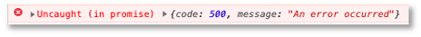

Callbacks und Promises¶
Manche Konzepte sind in JavaScript bzw. TypeScript für Java-Programmiererinnen zunächst ungewöhnlich. Dazu gehören Callbacks und Promises. Diese Konzepte werden hier etwas näher beleuchtet.
Callbacks¶
Zunächst einmal sind Callbacks Funktionen, die anderen Funktionen als Parameter übergeben werden. Wir betrachten folgendes Beispiel:
1 2 3 4 5 6 7 8 9 10 11 12 13 | |
Wir haben drei Funktionen. Diese werden als anonyme Funktionen definiert, aber die Funktionsdefinitionen werden sofort einer Variablen zugewiesen. Das bedeutet, dass z.B. der Wert der Variablen x die Funktionsdefinition
function () {
console.log ("Ausgabe der Funktion x");
}
console.log(x) aufrufen, dann erhalten wir folgende Ausgabe auf der Konsole:
ƒ () {
console.log ("Ausgabe der Funktion x");
}
x();, also sozusagen, die Variable als Funktion aufrufen, dann wird die Funktion ausgeführt und wir erhalten auf der Konsole die Ausgabe
Ausgabe der Funktion x
Wenn wir nun z(x); aufrufen, dann wird die in den Zeilen 9-12 definierte Funktion aufgerufen, wobei der Parameter callback als Wert die Funktionsdefinition von x übergeben wird. In Zeile 11 erfolgt dann mithilfe von callback(); eigentlich der Aufruf x();.
Wir können aber auch z.B. z(y); aufrufen. Dann wird z nicht die Funktion x, sondern die Funktion y übergeben und der Aufruf callback(); in Zeile 11 entspricht somit dem Aufruf y();.
Ein großer Vorteil dieser Callbacks bestehen darin, dass der Aufruf asynchron erfolgt. Schauen wir uns z.B. einmal an, wie die mögliche Ausgabe der Aufrufe
z(x);
z(y);
Ausgabe der Funktion z - vor Aufruf von callback
Ausgabe der Funktion x
Ausgabe der Funktion z - vor Aufruf von callback
Ausgabe der Funktion z - vor Aufruf von callback
Ausgabe der Funktion y
Ausgabe der Funktion z - vor Aufruf von callback
Wichtig ist, dass Callbacks die aufrufende Funktion nicht blockieren, sondern asynchron ausgeführt werden. Dieses einfache Beispiel soll das demonstrieren:
1 2 3 4 5 | |
setTimeout()-Anweisung und eine console.log('Ausgabe B');-Anweisung, die nacheinander aufgerufen werden (setTimeout() vor console.log()). Innerhalb der setTimeout()-Anweisung wird eine Funktion als Callback übergeben. Innerhalb dieser Funktion erfolgt der Aufruf von console.log('Ausgabe A');.
Das Ausführen des Programms ergibt folgende Ausgabe:
Ausgabe B
Ausgabe A
Die Ausgabe von Ausgabe A erfolgt ca. 3 Sekunden nach Ausgabe B. Das liegt daran, dass die Callback-Funktion asynchron ausgeführt wird und alle weiteren Ausführungen nicht blockiert. Das bedeutet, dass wir mithilfe von Callbacks eine asynchrone Ausführung unseres JavaScript-Codes erreichen. Der einzelne JavaScript-Thread wird also für den Aufruf der Callbacks verwendet und irgendwann sind diese Callback-Aufrufe beendet. Ein gegenseitiges Blockieren findet nicht statt, sondern es bleibt sogar noch Platz für weitere Aufrufe (hellgrüne Bereiche im folgenden Bild):

Das problem mit diesen Callback ist, dass sie sehr schnell sehr unübersichtlich werden. Man spricht von der Callback-Hölle, in der man sehr schnell ist, sobald genügend viele Callbacks asynchron (nebenläufig) ausgeführt werden, diese sogar ineinander verschachtelt sind (Callbacks in Callbacks) und man gar nicht weiß, wann welche Callbacks beendet sind. Sobald man aber erst die Ausführung eines Callbacks abwarten muss, weil man die Resultate dieses Callbacks weiterverarbeiten möchte, entstehen wieder synchrone Aufrufe und der Vorteil der asynchronen Abarbeitung ist dahin. Um dieses Problem zu lösen, wurden Promises entwickelt.
Promises¶
Ein Promise ist zunächst einmal ein JavaScript-Objekt. Es enthält einerseits den Code zum Erzeugen eines Promise-Objektes (producing code) und anderseits auch den Code zum Verarbeiten eines solchen Promise-Objektes (consuming code). Dabei können zwei Sachen verarbeitet werden:
- entweder das
Promise-Objekt wurde erfolgreich abgearbeitet (resolve) oder - das
Promise-Objekt wurde nicht erfolgreich abgearbeitet (reject).
Die allgemeine Syntax eines solchen Promise-Objektes sieht so aus (siehe z.B. w3scool):
1 2 3 4 5 6 7 8 9 10 11 12 | |
Betrachten wir das obere Beispiel genauer:
- in Zeile
1erstellen wir eine VariablemyPromise, die wir natürlich nennen können, wie wir möchten - diese Variable zeigt auf ein
Promise-Objekt, das ebenfalls in Zeile1mithilfe vonnewund dem Aufruf des Konstruktors erzeugt wird - einem
Promise-Objekt (dem Konstruktor) wird immer eine Funktion übergeben, der wiederum zwei Callback-Funktionen als Parameter übergeben werden - die erste Callback-Funktion, die hier
myResolveheißt (aber meistens nurresolve), wird aufgerufen, wenn dasPromise-Objekt erfolgreich abgearbeitet wurde (Zeile4) - die zweite Callback-Funktion, die hier
myRejectheißt (aber meistens nurreject), wird aufgerufen, wenn dasPromise-Objekt nicht erfolgreich abgearbeitet wurde (Zeile5) -
den Aufruf des
promise-Objektes sehen wir in Zeile9. EinPromise-Objekt durchläuft durch den Aufruf 2 der folgenden 3 Zustände:pending: dasPromise-Objekt wird abgearbeitet und hat noch kein Resultat (undefined),fulfilled: dasPromise-Objekt wurde erfolgreich abgearbeitet und liefert den entsprechenden Resultatwert zurück oderrejected: dasPromise-Objekt wurde nicht erfolgreich abgearbeitet und liefert einError-Objekt zurück
-
es gibt aber keine Möglichkeiten, auf diese Zustände eines
Promise-Objektes zuzugreifen und auch nicht direkt auf den Resultatwert oder das Fehlerobjekt; stattdessen muss eine entsprechende Funktion desPromise-Objektes aufgerufen werden, die selbst wieder einPromise-Objekt zurückgibt, nämlichthen() - der Aufruf von
then()ist ebenfalls in Zeile9gezeigt; diese Funktion hat zwei Parameter: dem ersten Parameter wird der Resultatwert übergeben (wenn dasPromise-Objekt denfulfilled-Zustand erreicht hat) und dem zweiten Parameter wird das Fehlerobjekt übergeben (wenn dasPromise-Objekt denrejected-Zustand erreicht hat). Beide Parameter sind wiederum Callbacks.
Wir werden sehen, dass wir den rejected-Zustand auch mit catch() abfangen können, aber dazu kommen wir später. Zunächst noch einmal zur Vertiefung unser obiges Callback-Beispiel mit setTimeout() als Promise:
1 2 3 4 5 6 7 8 9 10 11 12 13 14 | |
Die Ausgabe in Zeile 14 hat nichts mit dem Promise zu tun, aber wir lassen sie mal im Code, um das gleiche Beispiel wie oben zu haben. Es erfolgt zunächst die Ausgabe Ausgabe B auf der Konsole und 3 Sekunden später die Ausgabe resolve -- Ausgabe A. Rein funktional hat sich also nichts geändert. Wie Sie den Parameter für den resolve-Fall (und dann auch für den reject-Fall) nennen, bleibt ganz Ihnen überlassen; hier value (Zeile 8).
Dieses Mal heißt unser Promise-Objekt promise und die beiden Callback -Funktionen resolve und reject (Zeile 1). Der producing code enthält nur die Implementierung von resolve. In dem Beispiel gibt es also (noch) kein reject. In den Zeilen 7-12 sehen wir den consuming code der Promise, auch hier wieder nur für resolve. Es erfolgt die Ausgabe des Wertes, den resolve übergeben hat.
Promises in Arrow-Notation¶
Weil wir es mitlerweile häufig sehen und weil wir uns auch angewöhnen wollen, diese selbst zu benutzen, hier das gleiche Beispiel nochmal in Arrow-Notation:
1 2 3 4 5 6 7 8 9 10 11 12 13 14 | |
Es ist auch noch zu erwähnen, dass Sie nur selten selbst Promises erstellen, sondern diese viel häufiger nutzen werden. Das heißt, Sie werden nicht so häufig producing code, sondern viel häufiger consuming code schreiben. Beispielsweise gibt die Registrierung eines service workers ein Promise zurück:
1 2 3 4 5 6 7 8 9 10 | |
Ein großer Vorteil von Promises ist, dass Sie die Verarbeitung verketten können. Die then()-Funktion liefert selbst wieder ein Promise zurück, so dass Sie erneut dieses Promise mit then() behandeln können. Wir kommen darauf in den Anwendungen nochmal zurück.
Der reject-Fall¶
Wir schauen uns jetzt an, wie wir den Fall am besten behandeln, wenn das Promise nicht in den fulfilled, sondern in den rejected-Zustand übergeht, wenn also nicht resolve, sondern reject ausgeführt wird. Wir ändern unser Beispiel einmal entsprechend:
1 2 3 4 5 6 7 8 9 10 11 12 13 14 15 | |
Wir haben also Zeile 3 auskommentiert (resolve) und stattdessen reject eingefügt (Zeile 4). Im Gegensatz zu resolve geben wir jetzt mal keinen einfachen string, sondern ein JavaScript-Objekt zurück (erkennbar an { }). Wir sind darin völlig frei, was zurückgegeben wird, aber es bietet sich an, ein Error-Objekt zu erzeugen. Die then()-Behandlung des Promise-Objekt lassen wir zunächst unverändert (Zeilen 8-13).
Wenn wir diesen Code ausführen, dann wird erneut Ausgabe B ausgegeben (Zeile 15 - hat nichts mit dem Promise zu tun), aber nach 3 Sekunden erfolgt keine Ausgabe auf der Konsole, sondern stattdessen erscheint auf der Konsole:

Error-Behandlung in der then()-Funktion¶
Wir behandeln den geworfenen Fehler nicht, da wir in unserer then()-Behandlung bis jetzt nur den resolve-Fall behandeln (Zeilen 9-11). Das ändern wir nun:
1 2 3 4 5 6 7 8 9 10 11 12 13 14 15 16 17 | |
In den Zeilen 12-14 wurde die Behandlung des Fehlerfalls hinzugefügt (beachten Sie auch das zusätzliche Komma in Zeile 11). Wie Sie die Variable err nennen, bleibt Ihnen überlassen. Sie bekommt den Wert, den das Promise für den reject-Fall übergibt, in unserem Beispiel also ein JavaScript-Objekt:
{
code: 500,
message: 'An error occurred'
}
weil wir das in Zeile 4 so definiert haben. Wir greifen also auf die Werte der Schlüssel code und message zu und lassen diese auf die Konsole ausgeben (Zeile 13). Auf der Konsole erscheint 3 Sekunden nach der Ausgabe Ausgabe B die Ausgabe 500 An error occurred.
Error-Behandlung im catch()-Block¶
Es ist ungewöhnlich, den Fehlerfall in der then()-Funktion zu behandeln, obwohl es, wie wir gesehen haben, möglich ist. Stattdessen verwendet man für den Fehlerfall besser catch():
1 2 3 4 5 6 7 8 9 10 11 12 13 14 15 16 17 18 19 20 | |
async/await¶
Die Verkettung von .then()-Pfaden kann zu unübersichtlichem Code führen. Deshalb wurden die Schlüsselwörter async und await eingeführt (siehe z.B. hier, hier, hier oder hier).
Wir betrachten ein Beispiel, das wir zunächst mit .then()-Verkettung anwenden und danach mit async/await. gegeben sind die beiden folgenden JavaScript-Funktionen:
function makeRequest(file) {
return new Promise( (resolve, reject) => {
console.log('making request for ' + file);
if(file == 'index.html') {
resolve('index.html exists')
} else {
reject(file + ' does not exist')
}
});
}
function processRequest(response) {
return new Promise( (resolve, request) => {
console.log('processing response');
resolve('processing done for ' + response)
})
}
Die Anwendung dieser Funktionen könnte wie folgt aussehen:
makeRequest('index.html') // resolve-Fall
.then( response => {
console.log('response received');
console.log(response)
return processRequest(response)
})
.then( processedResponse => {
console.log(processedResponse)
})
.catch( error => console.log(error))
erzeugt folgende Ausgabe:
making request for index.html
response received
index.html exists
processing response
processing done for index.html exists
bzw., wenn der übergebene Dateiname nicht index.html entspricht:
makeRequest('index1.html') // jectect-Fall
.then( response => {
console.log('response received');
console.log(response)
return processRequest(response)
})
.then( processedResponse => {
console.log(processedResponse)
})
.catch( error => console.log(error))
erzeugt folgende Ausgabe:
making request for index1.html
index1.html does not exist
Dem Aufruf von makeRequest() (und auch dem von processRequest()) könnten wir jedoch auch das Schlüsselwort await voranstellen. Dabei ist jedoch zu beachten, dass Aufrufe von await nur in als async deklarierten Funktionen erfolgen kann. Wir bauen deshalb obige Aufrufe in einer JavaScript-Funktion nach:
async function testPromises() {
try {
let response = await makeRequest('index1.html'); // reject-Fall
console.log('response received');
let processedResponse = await processRequest(response);
console.log(processedResponse);
} catch(error) {
console.log(error)
}
}
bzw.
async function testPromises() {
try {
let response = await makeRequest('index.html'); // resolve-Fall
console.log('response received');
let processedResponse = await processRequest(response);
console.log(processedResponse);
} catch(error) {
console.log(error)
}
}
Dies erzeugt jeweils die gleichen Ausgaben wie oben gezeigt.